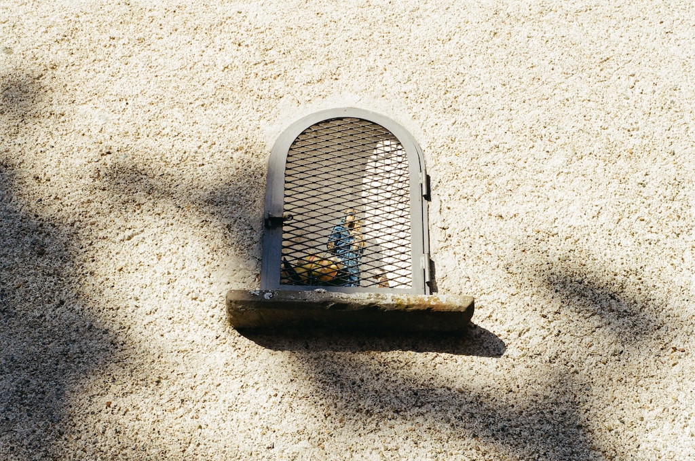

elements of the sangiacomo home. if i recall correctly the grandfather returned to italy and bought his family home and the neighboring plot and rebuilt what appears to be a 70's rennaissance inspired castle.
big guy.

aperol or dayquil?
summer of thrifted flowy shirts.
red.
stray.

still plenty of farm elements in this village.
this one had some off-the-grid elements.
the dead.
unsure who captured my mullet.


there's always a church.